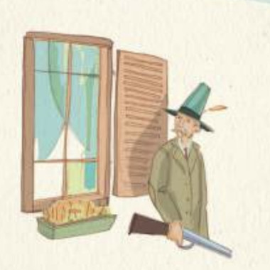

Pero Caperucita Roja no era una niña común y corriente. Justo cuando el lobo saltó hacia ella, Caperucita sacó una navaja que su madre le había dado para defenderse en caso de peligro. Con gran rapidez, Caperucita esquivó al lobo y logró herirlo en la pata, haciendo que el lobo retrocediera aullando de dolor.
El lobo, sorprendido por la valentía de la niña, intentó huir, pero sus heridas le dificultaban moverse. Caperucita Roja no perdió tiempo y corrió hacia la puerta para pedir ayuda. En ese momento, la puerta se abrió de golpe y apareció un cazador, alertado por los ruidos provenientes de la casa. Al ver la situación, el cazador no dudó ni un segundo y disparó su escopeta, hiriendo de muerte al lobo.
El cazador se acercó al lobo para asegurarse de que no representaba más peligro, y luego ayudó a Caperucita a levantarse. La niña, con lágrimas en los ojos, le agradeció al cazador por haber llegado justo a tiempo.
El cazador y Caperucita ayudaron a la abuela a salir del interior del lobo y la sentaron en la cama. La abuela, aunque asustada, estaba agradecida de que su nieta estuviera a salvo. Caperucita Roja ofreció los pasteles y la jarra de mantequilla a su abuela, y todos se sentaron a disfrutar de la comida.

La abuela, recuperándose del susto, le dijo a Caperucita que había sido muy valiente y que siempre debía estar preparada para enfrentar los peligros del mundo. El cazador, impresionado por la determinación de la niña, le enseñó a usar algunas herramientas para protegerse mejor.
Desde ese día, Caperucita Roja siempre llevó consigo su navaja y otros pequeños utensilios para defenderse. Aprendió la importancia de estar preparada y de no subestimar los peligros del bosque. La abuela, por su parte, reforzó su casa para que fuera más segura y siempre tuvo al cazador como un amigo cercano que vigilaba la seguridad del bosque.
Y así, Caperucita Roja, su abuela y el cazador vivieron felices y seguros, sabiendo que siempre estarían listos para enfrentar cualquier amenaza. El lobo había sido vencido, pero la lección de valentía y preparación quedó grabada en sus corazones para siempre.